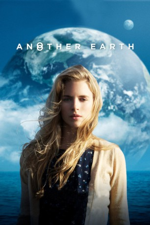
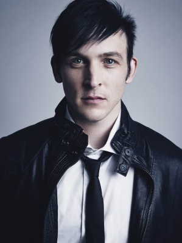
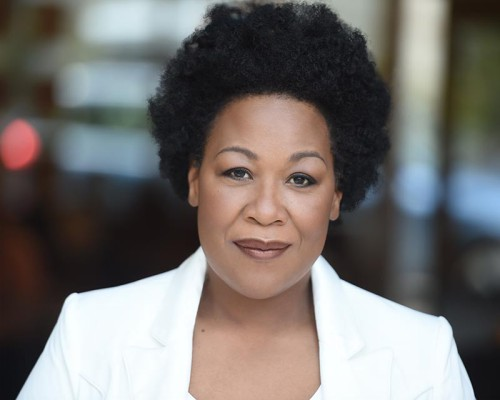
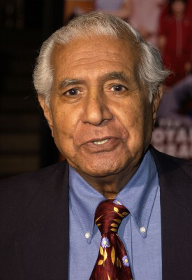
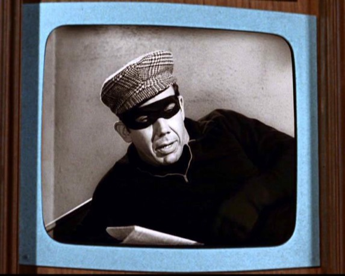

#1094 Another Earth
 
 IMDB-Wertung: 7.0 / 10
IMDB-Wertung: 7.0 / 10  Metascore: 66
Metascore: 66 
In der Nacht in der in unserem Sonnensystem ein neuer Planet entdeckt wird, der ein Duplikat der Erde ist, kreuzen sich die Wege einer jungen ambitionierten Studentin und eines erfolgreichen Musikkomponisten bei einem tragischen Unfall: Rhoda Williams, gerade an der Elite-Uni MIT aufgenommen, crasht nach einer durchfeierten Nacht in das Auto der Burroughs-Familie und tötet Frau und Sohn des bekannten Musikkomponisten und Professors John Burroughs. Danach tritt Rhoda in Johns Leben, um Buße zu tun. Sie freundet sich mit ihm an - ohne dass er ahnt, wer sie ist. Und selbst fragt sie sich, ob ihr Duplikat auf der anderen Erde, die selben Fehler wie sie gemacht hat.
Jahr: 2011
Dauer: 92 Minuten
FSK: 12
Land: USA Studio: Fox Searchlight PicturesTonspuren: DTS - ,
Untertitel: Deutsch,
Auflösung: 720p (1280x696) Größe: 4208 MB
Genre: Drama, Liebe, Sci-Fi
Regisseur: Mike Cahill
Drehbuch: Mike Cahill, Brit Marling
Soundtrack: Will Bates, Phil Mossman, Fall On Your Sword
Darsteller:
- William Mapother als John Burroughs
- Brit Marling als Rhoda Williams
- Matthew-Lee Erlbach als Alex
- Paul Mezey als Symposium Speaker
- Ana Valle als Symposium Speaker
- Jordan Baker als Kim Williams
-  Robin Lord Taylor als Jeff Williams
- Rupert Reid als Keith Harding
-  Natalie Carter als Career Counselor
-  Kumar Pallana als Purdeep
- Ana Kayne als Claire
- Diane Ciesla als Dr. Joan Tallis
- Luis Vega als Federico
- Ari Gold als Conspiracy Theorist
- Rebecca Price als Keith Harding's Secretary
- DJ Flava als DJ Flava
- Meggan Lennon als Maya Burroughs
- AJ Diana als Amos Burroughs
- Bruce Colbert als Symposium Speaker
- Jeffrey Goldenberg als Symposium Speaker
- Joseph A. Bove als Symposium Speaker
- Flint Beverage als Robert Williams
- Richard Berendzen als Richard Berendzen
- Shannon Maliff als High School Girl
- Stephanie Le Blanc als High School Girl
- Jasmine Andrade als High School Girl
- Kara Tweedie als High School Girl
- Yuval Segal als Television Reporter
-  Robert Phillips als Radio Reporter #1
- Hollyce Phillips als Television Anchor
- Rich Habersham als Radio Reporter #2
- Jennifer Jaramillo Valkana als Nurse
- Steve Giammaria als Television Interviewer
- Marty Garcia als College Professor , uncredited
Datei: X:\2011(A-F)\Another Earth (2011, FSK12, 1280x696).mkv seit 20.05.2015
Festplatte: HD 2010(G-Z)-2011(A-F)
 Es gibt insgesamt 86 Filme in der Gruppe '2011(A-F)'
Es gibt insgesamt 86 Filme in der Gruppe '2011(A-F)'